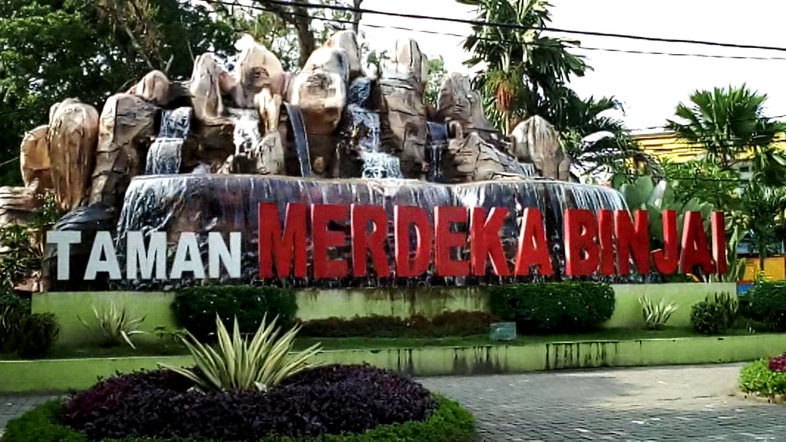

Taman Merdeka Binjai
Taman yang menjadi tempat kumpul favorit bagi masyarakat Binjai ini luasnya sekitar 1,5 hektar. Tempat ini juga sering dijadikan lokasi berbagai kegiatan, baik yang lokal maupun acara internasional. Fasilitas taman cukup lengkap dan terawat, tempat duduk yang nyaman hingga wahana panjat tebing. Ada banyak kuliner yang dijual di sekitar taman ini bagi Anda yang ingin mencoba makanan khas Binjai.